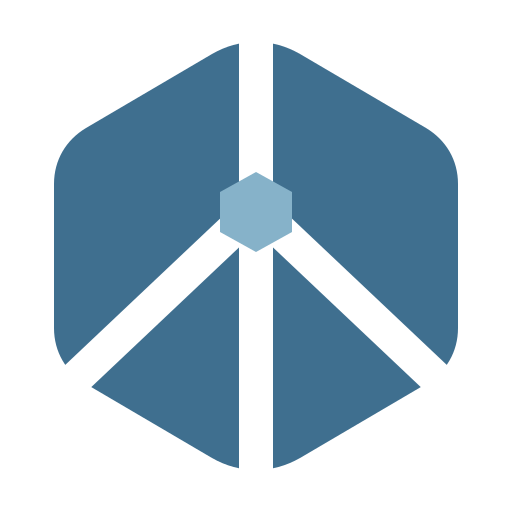
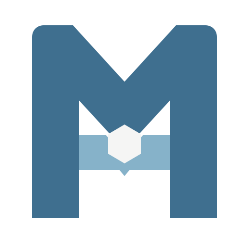
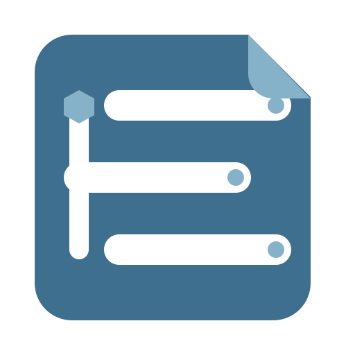
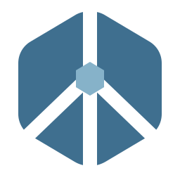
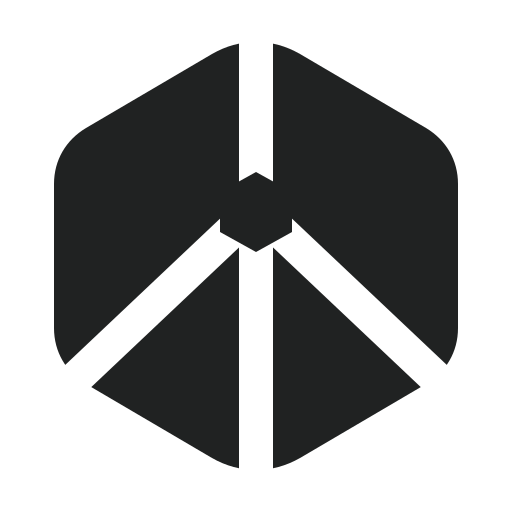

MASTER
DARK

本轮不再把树、链路、资源类型逐个画成小图标，而是把它们压缩成一个可识别的整体：稳定的 Node 轮廓、唯一的上游入口、在内部展开的多资源通道。
“一个可信边界，组织多种资源，并让它们持续可达。”
三个方案分别强调架构、名称和产品体验，不共享旧方案的外圈与节点连线。每个方向都提供母版、紧凑重绘和单色版本。


J 使用“一个轮廓 + 贯穿负空间 + 一个核心”三层语法。没有任何元素代表固定的 Variable、Stream 或 Topic，因此资源类型扩展不会让标志失效。
图标必须首先服务于桌面产品，而不是只在 512 px 展板中成立。这里使用推荐方向的 Compact 版本检查应用磁贴、侧栏、托盘与 16–64 px 阶梯。
外层磁贴已经提供圆角，标志本身不再套第二个圆形边框。

19 px 下与产品名并置，不抢占树浏览器的视觉层级。
深色任务栏中仍保持一个整体，不使用绿色改写品牌主体。
16/24 使用 compact，48 px 起可以切回母版。

MyFlowHub分数不是审美投票，而是根据当前架构语义、产品界面和生产尺寸约束进行的阶段性判断。视觉联想风险保留在表中，不用文案掩盖。
| 方向 | 项目独特性 | 架构语义 | 16 px | 单色 | 主要风险 |
|---|---|---|---|---|---|
| J · 节点键 | ●●●●○ | ●●●●● | ●●●●○ | ●●●●● | 技术徽章 / 路由分叉 |
| K · 流枢字标 | ●●●○○ | ●●●○○ | ●●●●● | ●●●●● | 企业 M 字标 |
| L · 资源谱 | ●●●●○ | ●●●●○ | ●●●●○ | ●●●●● | 文档 / 列表 |
首轮渲染中的三个圆头资源端点会把它读成网络/电路图，现已改为切穿主体的连续负空间，整体性明显提升。不过软六边形仍属于技术品牌常用母形，下一轮应继续微调上下比例，形成更专有的剪影。
结论：进入深化，当前推荐。
字母记忆比架构图更耐久，Compact 也最清晰。但 M 的份量过大，中央 Hub 容易变成装饰孔；如果用户希望品牌更像一个成熟软件公司而不是协议项目，它才有优势。
结论：保留为品牌化备选。
资源目录的语义安静且贴合 Desktop，节拍也比旧树状节点更统一；右上切角和三行结构却会把第一联想拉向文件。若深化，应去掉“纸张折角”，保留贯通脊线与错位资源槽。
结论：概念可取，轮廓需重做。
{kind=link}
{kind=link}
{kind=link}
{kind=link}
{kind=link}
{kind=link}
{kind=link}
{kind=link}
{kind=link}